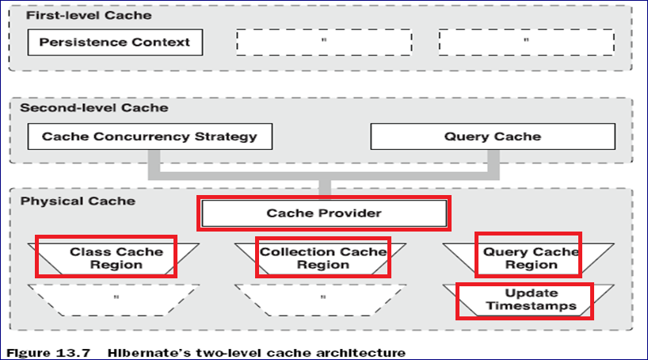

二级缓存由缓存提供者提供（ Cache Provider），包含四部分：类缓存区、集合缓存区、查询缓存区、更新时间戳
也就是说，查询缓存，依赖于二级缓存。


1、 是sessionFactory级别的缓存
2、 存放的是公有数据:共享数据，最后不修改。
3、 二级缓存的生命周期是随着hibernate容器启动就开了，hibernate销毁，结束。
4、 Hibernate本身对二级缓存没有提供实现，是借助第三方插件实现的。
2、 存放的是公有数据:共享数据，最后不修改。
3、 二级缓存的生命周期是随着hibernate容器启动就开了，hibernate销毁，结束。
4、 Hibernate本身对二级缓存没有提供实现，是借助第三方插件实现的。
二级缓存
概念
1 、该缓存在 sessionFactory中
2 、当hibernate容器启动的时候，二级缓存就存在了，只有当 hibernate容器关闭
的时候，二级缓存才要销毁。
3 、二级缓存中的数据是公有数据，任何人都能访问。
4 、类似火车的票务信息、飞机的票务信息都可以放入到二级缓存中
5 、二级缓存存放的数据应该是经常不修改的数据
二级缓存的特点
是借助第三方插件实现的二级缓存。
在这里用 ehcache实现。
配置步骤
1 、在hibernate的配置文件中指定二级缓存的供应商

2 、开启二级缓存

3 、开启二级缓存的统计机制

4 、针对某一个类开启二级缓存（二级缓存使用的是read-only，表明二级缓存是只读的。不能修改，这个也是二级缓存存在的目的，）
在Classes.hbm.xml文件中
session.get，
session.createQuery(hql).list()（前提是没有写select语句，或者是select new 一个对象，或者是where条件语句。这样，数据就会以对象封装到list中去。）
这两种方法，把数据放到二级缓存中去。当二级缓存被开启的时候，就不能够在修改数据，因此，在调试的时候，一定要注意。
另外：list()该方法能把一个对象放入到二级缓存中，但是不利用二级缓存获取对象。也就是说，list每一次都是从数据库中获得，放入二级缓存中，不会从二级缓存中，获得。
session.save方法不往二级缓存中存储数据
session.update方法不往二级缓存中存储数据
session.flush方法也不往二级缓存中存储数据
二级缓存分为类的二级缓存和集合的二级缓存。
类的二级缓存
案例1

说明：
当第二次执行 session.get方法的时候，并没有发出 sql语句，表明get方式，也会把数据放到二级缓存中去。
案例2

说明： session.save方法不进二级缓存
案例3

说明：
Update 方法不能让一个对象进入到二级缓存中。
案例4

说明：
执行55行代码的时候，把 classes表中的所有的对象进入到了二级缓存中（原因是没有select语句，直接就是where条件查询。放到list中的，是一个一个的对象，而不是对象中的属性，明白？？？）
执行59行代码的时候，重新从数据库中查找记录
所以createQuery(hql).list方法能把一个对象放入到二级缓存中，但是不利用二级缓存获取对象。也就是说，list每一次都是从数据库中获得数据，放入二级缓存中，不会从二级缓存中，获得数据。
get和load 可以读取类级别二级缓存， Query.list 只能存，不能取
案例5
在classpath的根目录下放置一个 ehcache.xml文件

从上述的配置可以看出， classes对象在内存中存放的数量最多为 5个，多余的对象将存在磁盘上。

查找 classes表中所有的对象，在内存中放置 5个对象，剩余的对象将被存在磁盘上。
集合的二级缓存
案例6
二级缓存的集合缓存
相当于开启了classes类中的 set集合的二级缓存

把集合放入到了二级缓存中。
读写策略
Usage
Ready-only
只能把一个对象放入到二级缓存中不能修改
Read-write
能把一个对象放入到二级缓存中，也能修改
sessionFactory.getStatistics().getCollectionLoadCount()；二级缓存中集合的个数
sessionFactory.getStatistics().getEntityLoadCount()；二级缓存中对象的个数
session.getStatistics().getCollectionCount();一级缓存中，集合的个数。
session.getStatistics().getEntityCount(); 一级缓存中，对象的个数。